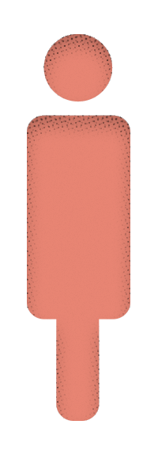

현대인을 위한
정신건강지식 백과사전
정신건강지식 백과사전
나와 내 주위 사람들을 더 잘 이해하고 도와주기 위한
현대인 정신건강지식 증진 캠페인
현대인 정신건강지식 증진 캠페인
스크롤을 아래로 내려보세요

알고계신가요?
평생에 한 번이라도 정신질환에 걸리는 사람은
4명 중 1명(25.4%)
평생에 한 번이라도 정신질환에 걸리는 사람은
4명 중 1명(25.4%)

정신건강이 나빠지면 다양한 증상으로 이어집니다.
이 증상들 중 하나를 겪는다면
정신건강에 주의를 기울여야 합니다.
이 증상들 중 하나를 겪는다면
정신건강에 주의를 기울여야 합니다.
정신 질환 보유자의 주요 증상
심각한 스트레스
계속되는 우울
생활에 지장을 줄 정도의 기분 변화
수 일간 지속되는 불안감
불면증
건망증으로 인한 일상생활 장애
기타 중독문제
38.6%
29.1%
29.1%
25.0%
24.1%
19.5%
12.4%
이런 질환들은 치료가 필요할까요? 나 혼자만 겪고 있는 증상일까요?
그런데 무엇이 질환이고, 얼마나 위험한지
어떻게 알 수 있을까요?
분노조절장애
무대공포증
리셋증후군
미소포니아
PTSD
허언증
색정증
건망증
선택장애
카페인 증후군
이렇게 정신건강과 증상을 이해하고, 적절한 도움을 얻을 수 있는 전반적인 능력을
정신건강지식 Mental Health Literacy 이라고 합니다.
정신건강지식 Mental Health Literacy 이라고 합니다.
정신건강지식을 갖춘다면 조기에 이상징후을 발견해서
질환의 예방율과 치료율을 높일 수 있으며
질환의 예방율과 치료율을 높일 수 있으며
이상징후 발견 !
질환 진단
치료 과정
정신건강에 어려움을 겪는 사람들의
상황과 심경을 이해할 수 있습니다.
상황과 심경을 이해할 수 있습니다.
이를 돕기 위해 현대인의 정신건강지식 프로젝트는 연간 검색어 트렌드를 기반으로 선별된
현대인이 눈여겨 봐야 할 증상 60가지의 정보 카드들을 제공합니다.
현대인이 눈여겨 봐야 할 증상 60가지의 정보 카드들을 제공합니다.
여러분과 겪었던 증상을 찾아 카드를 클릭해서 정보를 확인해보세요.
스크롤을 내리면 계속됩니다.
스크롤을 내리면 계속됩니다.